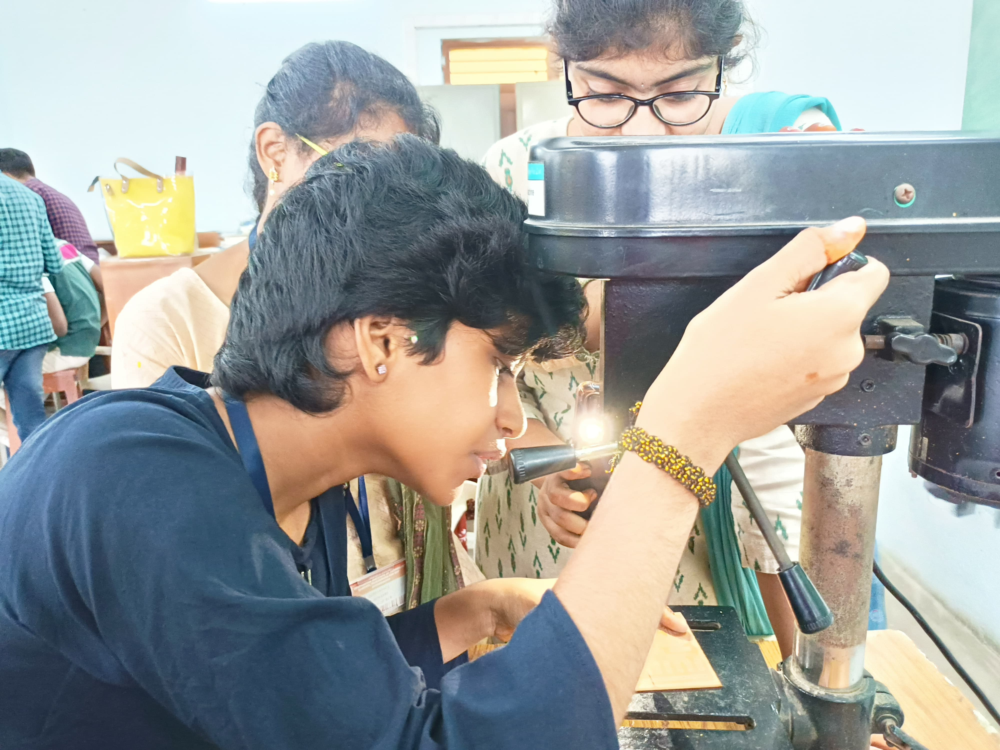

Electronics and Communication Engineering (ECE) is a vibrant and evolving field that focuses on the design, development, and application of electronic devices and communication systems. It combines core principles of electronics, telecommunications, and signal processing to enable innovations in areas like wireless communication, embedded systems, and the Internet of Things (IoT). ECE students gain a strong foundation in circuit design, digital and analog communication, microprocessors, and VLSI design. The branch also explores advanced topics like artificial intelligence, robotics, and satellite communication. With applications in diverse industries such as healthcare, defense, and consumer electronics, ECE offers endless opportunities for innovation and career growth.
Graduates of CSE programs have diverse career opportunities in industries like information technology, software development, telecommunications, and more. They are well-prepared to tackle challenges in both theoretical and practical aspects of computing, making significant contributions to technological advancements.
Electronics and Communication Engineering (ECE) plays a critical role in shaping modern technology and its applications. This branch focuses on building systems that facilitate efficient communication and the functioning of electronic devices. Students delve into areas like signal processing, wireless networks, semiconductor technology, and optical communication. With its blend of hardware and software knowledge, ECE prepares students to innovate in fields like 5G communication, IoT, and robotics. The versatility of ECE ensures its relevance across industries, making it a sought-after field for those passionate about technology and its impact on society.

Electronics and Communication Engineering
Clock controls the world , we control the clock.

Electronics and Communication Engineering Lab Facility
The ECE lab facilities at our college are designed to provide students with practical exposure to the core concepts of Electronics and Communication Engineering. The labs are equipped with state-of-the-art instruments and tools that support the study of electronic devices, circuits, and communication systems.
Additionally, the college offers specialized labs like the Microwave and Optical Communication Lab, where students can explore cutting-edge communication technologies, and the Embedded Systems Lab, which allows for the design and programming of microcontrollers. These labs foster creativity and innovation, enabling students to experiment with emerging technologies in fields like IoT, robotics, and wireless communication.
Additionally, the college offers specialized labs like the Microwave and Optical Communication Lab, where students can explore cutting-edge communication technologies, and the Embedded Systems Lab, which allows for the design and programming of microcontrollers. These labs foster creativity and innovation, enabling students to experiment with emerging technologies in fields like IoT, robotics, and wireless communication.
